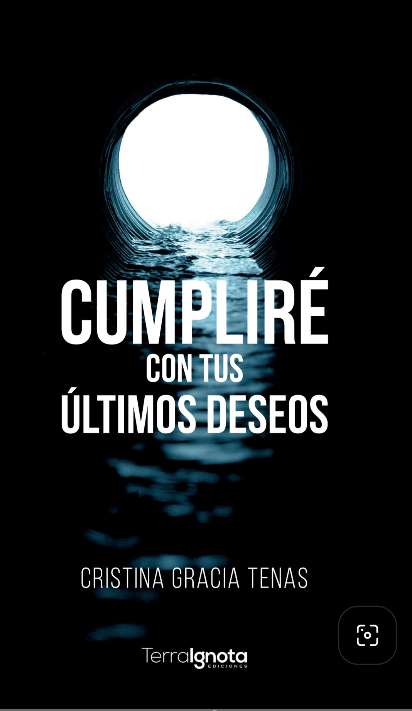

Celia es una experta en mentir, empezando por ella misma. Un último y devastador revés hace que los cimientos de su mundo se agrieten. Por fin, tomará el control de su destino, por primera vez.
Celia es una experta en mentir..., empezando por ella misma. Para el mundo, es un pilar inamovible, la mujer de hierro capaz de cargar con cualquier peso. Pero tras esa fachada de invulnerabilidad se esconde una patología silenciosa: la incapacidad de decir «no». Un último y devastador revés hace que los cimientos de su mundo se agrieten. Por fin, tomará el control de su destino, por primera vez.
Pero la vida tiene sus propios planes para ella. Un encuentro fortuito en una tarde de primavera pone en jaque su voluntad. Celia duda. ¿Cumplirá lo que llevaba en mente? ¿Claudicará de nuevo por contentar a los demás?
¿Hasta dónde estamos dispuestos a llegar para dejar de cargar con el peso de los demás?

Daniel prometió a su esposa antes de morir que cumpliría con sus últimos deseos. Ella le pidió que no leyera la carta hasta que todo hubiera terminado. Poco se podía imaginar el viudo que esos deseos trastocarían para siempre aquella vida ficticia que habían construido los dos tras muchos años de matrimonio.
La autora nos presenta una novela mordaz con bastante humor. Un humor fresco y sin cortapisas otorgado por una narradora un tanto especial que mantiene al lector entre la sonrisa, la risa, la tristeza y la irritación.
Cristina Gracia Tenas nace en Barcelona en 1958. Al no tener una vocación definida, comienza su etapa laboral a los 17 años, en una multinacional de Productos químicos. Tras formarse trabajará en la misma empresa durante 40 años como Técnico de laboratorio.
Un contratiempo de salud inesperado hace que tenga que abandonar su carrera profesional antes de lo que ella hubiera deseado.
Tras un año de baja laboral le conceden una invalidez y empieza a darse cuenta de que tiene que ocupar sus horas en algo que la satisfaga.
Empedernida lectora desde los siete años, se le ocurre apuntarse a cursos de escritura creativa ya que mucho devorar libros… pero jamás había escrito ni una sola línea… bueno alguna carta.
Tras escribir varios relatos que deja leer a sus amistades y familia, y ante su insistencia decide enviar uno de sus manuscritos a una editorial. Para su sorpresa es aceptada.
En 2019 publica Así lo viví… así os lo cuento, una novela corta de corte intimista.
En 2021 ve la luz Una vieja cámara, novela dura sobre la lacra del maltrato, pero con un halo de esperanza.
En 2023 nos sorprende con un cambio de registro Nunca fue una pesadilla. Su primer thriller, hasta el momento.
En 2024 publica Cumpliré con tus últimos deseos (su novela más loca y con la que más se divirtió al escribirla).
Durante todos estos años ha participado junto a muchos compañeros en al menos una docena de antologías de relatos. Destacando Cuatro almas en su universo, con sus queridos amigos y compañeros de Las flores del mal. Un libro de relatos escrito a ocho manos.
Hoy nos presenta Semillas del pasado. Según ella, su novela más intimista.